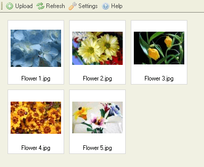
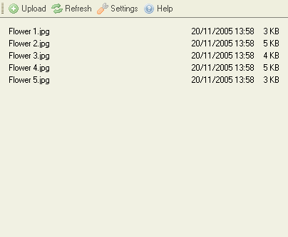
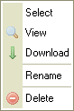

Tiedostoruutu listaa kansiossa sijaitsevat tiedostot.
Tiedostoruutu voidaan esittää kahdella eri tavalla, riippuen CKFinderin asetuksista (katso "Asetukset"). Ohessa vertailu "Esikatselukuva" ja "Luettelo" -näkymästä samalle kansiolle:


Napsauta tiedostoa valitaksesi sen. Kun osoitin on tiedoston päällä, tiedostoalue muuttaa väriään. Valitun tiedoston taustan väri muuttuu, yleensä siniseksi.
Tiedoston edistyneempiin toimintoihin pääset "pikavalikosta". Seuraavat toiminnot ovat valittavissa:

Huom: Jotkin pikavalikon valinnat voivat olla kytkettynä pois, mikäli pääkäyttäjä on näin valinnut.
Valitse tiedosto napsauttamalla "Valitse"-toimintoa.
Napsauta "Näytä" esikatselleksallesi tiedosta selaimessa. Kaikentyyppisiä tiedostoja ei voida näyttää selaimessa, mutta kuvat, teksti ja PDF-tiedostot (Adobe Portable Document Format) voidaan. Muissa tapauksissa selain kysyy, millä sovelluksella haluat tiedoston avata.
Ladataksesi tiedoston, napsauta "Lataa"-nappia. Selain pyytää esittämään paikallisen kansion, johon haluat tiedoston ladata.
Napsauta "Uudelleennimeä"-nappia pikavalikosta antaaksesi tiedostolle uuden nimen. Näkyviin ilmestyy ikkuna, joss lukee tiedoston nykyinen nimi. Anna uusi nimi ja kuittaa.
Kansio- ja tiedostonimissä ei voi käyttää kaikkia merkkejä. Tämä on käyttöjärjestelmäkohtaista. Esim. : \ / : * ? " < > |
Huom: Kun uudelleennimeät kansion, linkin tai mediatiedoston, jota käytetään jollain toisellakin sivulla, toisen sivun linkit rikkoontuvat. Ole siis varovainen toimenpiteen suhteen.
Poistaaksesi tiedoston, napsauta "Poista" pikavalikossa. Näkyviin ilmestyy ikkuna, jossa kysytään varmistusta toimenpiteelle.
Huom: Kun poistat kansion, linkin tai mediatiedoston, jota käytetään jollain toisellakin sivulla, toisen sivun linkit rikkoontuvat. Ole siis varovainen toimenpiteen suhteen.